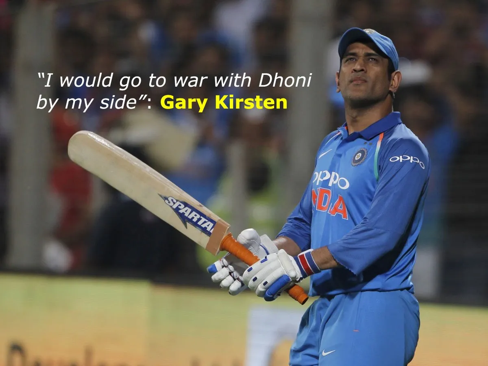
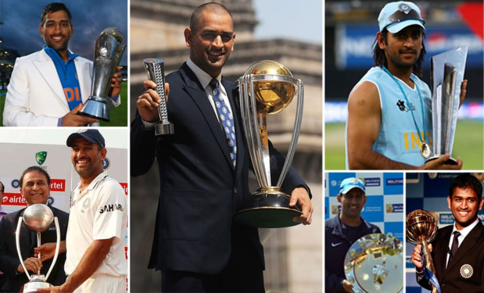

Mahendra Singh Dhoni
Mahendra Singh Dhoni (commonly known as M. S. Dhoni) is an retired
Indian cricketer who captained the
Indian team in limited-overs formats from
2007 to 2016 and in Test cricket from 2008 to 2014.
An attacking right-handed
middle-order batsman and wicket-keeper, he is widely regarded as one of
the greatest finishers in limited-overs cricket.
He made his One Day International (ODI)
debut in December 2004
against Bangladesh, and played his first Test a year later against
Sri Lanka.
Carrer Statistics
| Competition | Test | ODI | FC | T20Is |
|---|---|---|---|---|
| Matches | 90 | 350 | 131 | 98 |
| Innings | 144 | 297 | 210 | 85 |
| Runs Scored | 4876 | 10773 | 7038 | 1617 |
| Highest Score | 224 | 183* | 224 | 56 |
| Batting Average | 38.09 | 50.57 | 36.84 | 37.60 |
| 100/50s | 6/33 | 10/73 | 9/47 | 0/2 |
| Catches/Stumpings | 256/38 | 321/123 | 364/57 | 57/34 |
Personal Life
MS Dhoni comes from a typical family.
His father Pan Singh, worked for MECON and
his mother Devki Devi is a housewife. He has an
elder brother, Narendra Singh Dhoni, who is
a politician,
and a sister, Jayanti Gupta, who is a teacher. In 2010,
Mahi married
Sakshi, his childhood sweetheart. Sakshi was his classmate in his school, and she was then
studying Hotel Management in Kolkata. In February of 2015, the couple welcomed a
baby girl named Ziva.
Famous quotes given by Captain Cool:
- For me, the opposition is just another opposition.
- Face the failure, until the failure fails to face you.
- The process is more important than the results. And if you take care of the
process, you will get the results. - A loss makes you humble
- I don't mind repeating everything.
Achievement
Under his captaincy, India-
Won the ICC T20 World Cup.
Won the ICC ODI World Cup.
Won the ICC Champions Trophy.
Won Asia Cup in 2020 & 2016.
Won ICC Test Mace in 2010 & 2011.
Won the Border-Gavaskar Trophy in 2008,2010 & 2013.
Held the numero uno positions in Test ranking for 18 months.
Took Chennai Super Kings to
Championship title in 2010,2011,2018,2021 & 2023 edition of IPL.
Championship title in 2010 & 2014 edition of Champions League T20.